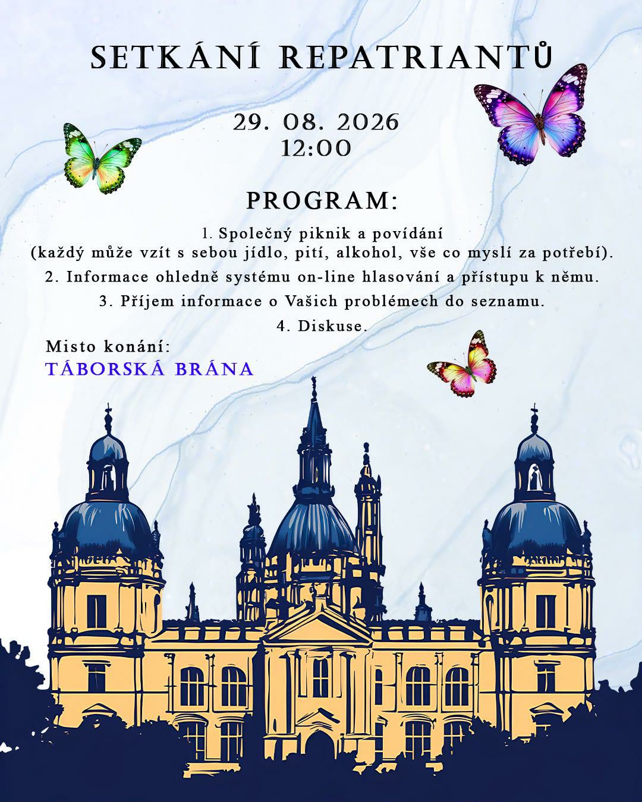
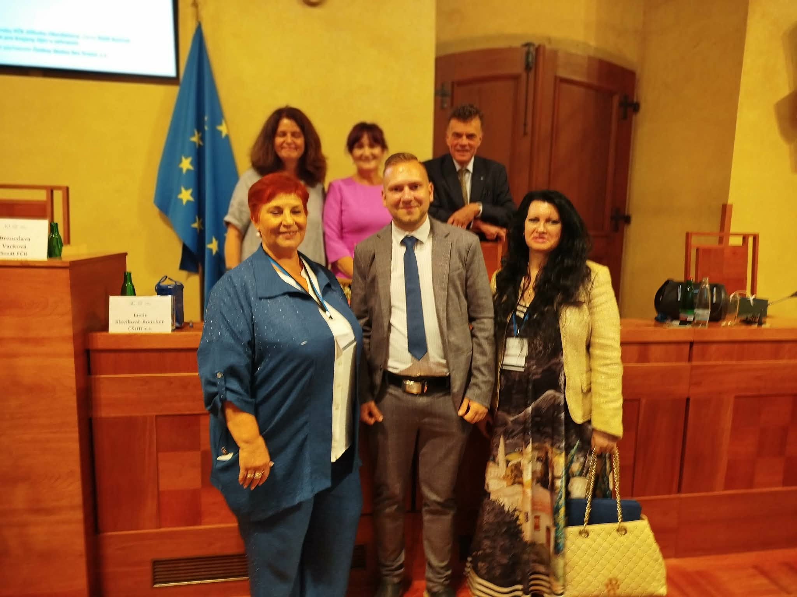
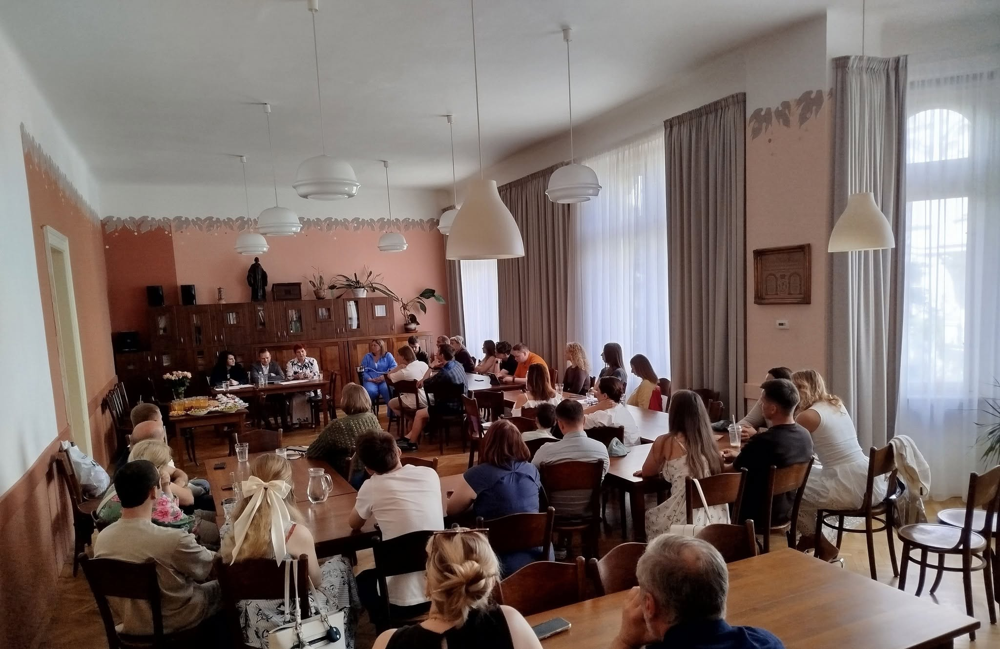
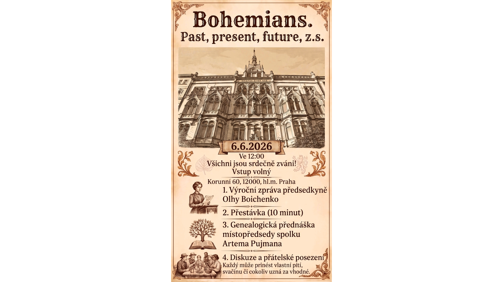
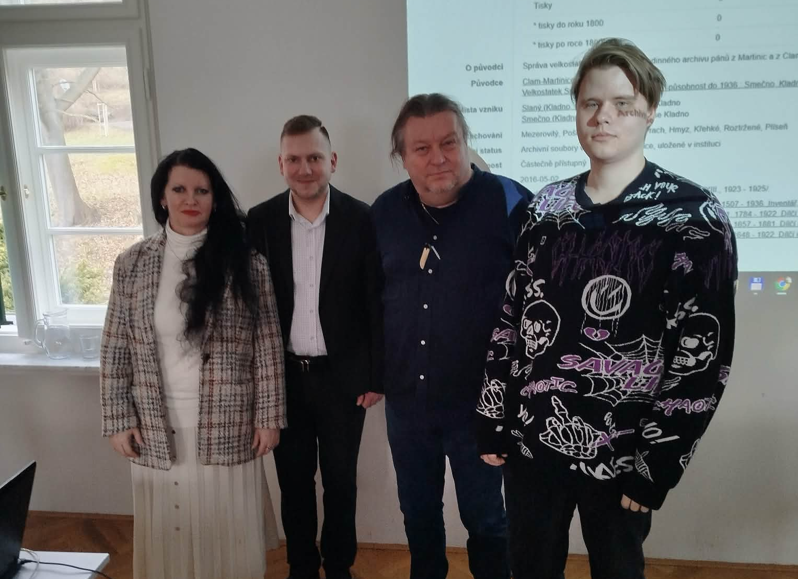
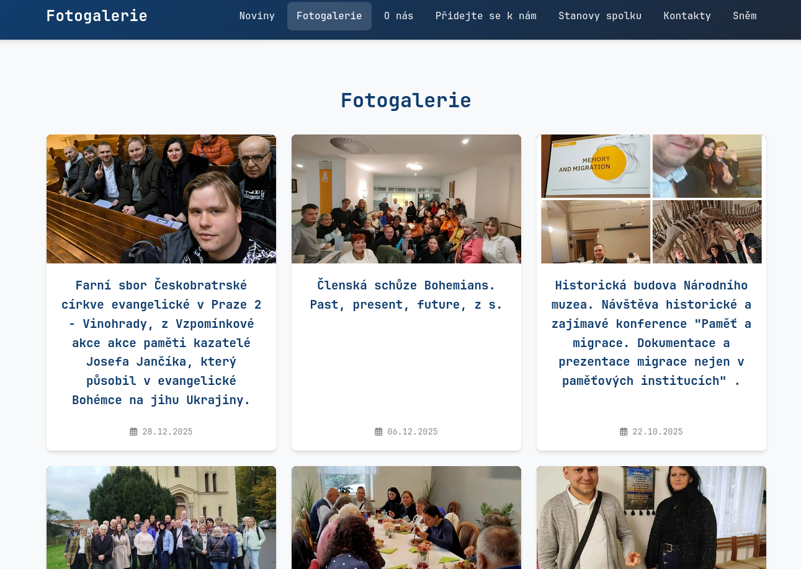
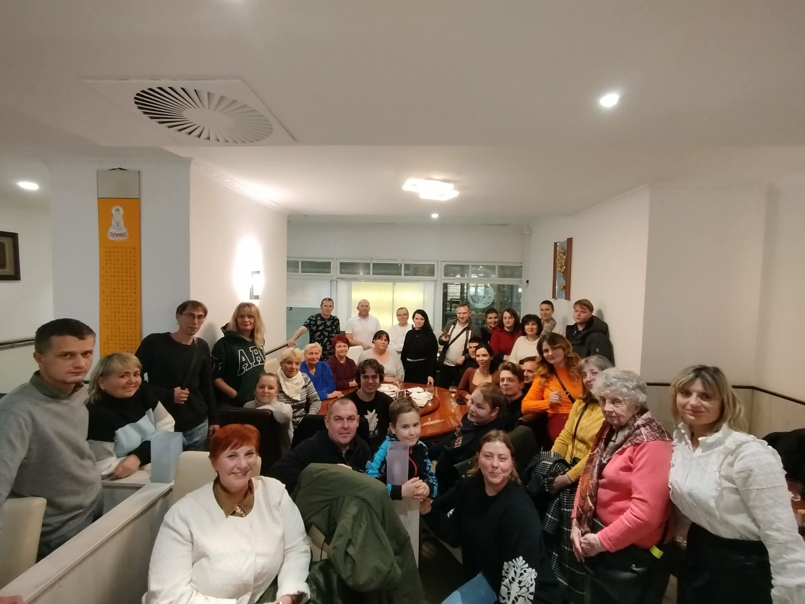

Setkání repatriantů - Táborská brána
29.08.2026
Poslední zprávy, prohlášení a události spolku repatriantů


Konference zúčastnili úředníci ministerstev ČR, senátoři včetně Předsedy ředsedy Miloše Vystrčila, představitelé krajanských spolků a škol z celého světa, Výbor našeho spolku Bohemians.Past, present, future, z.s. . Důležitým aspektem v příspěvcích a diskuzní části byla výuka češtiny jako jednoho ze způsobu záchrany identity

Byla představena výroční zpráva spolku. Také přitomní na schůzi poslechli genealogickou přednášku. Na 2 části schůze byly probrané důležité záležitosti krajanů v ČR. Byly předloženy způsoby jejich řešení. Potom si krajané užili posezení u čaje a kávy. Spolek se rozšiřuje, přidejte se k nám!

Spolu tvoříme dějiny.

V Ústí nad Labem přední odborníci z České republiky sdíleli cenné informace o tom, jak hledat své české kořeny pomocí online zdrojů.

S radostí oznamujeme spuštění nové záložky "Fotogalerie". Kromě novinek v ní najdete i unikátní archiv z "předhistorie spolku" – mapující naší aktivity i do dne založení spolku 7 června 2025
Českého evangelického kazatelé v obci Bohemka na jihu Ukrajiny

Dnes se uskutečnilo setkání členů našeho spolku. Zaměřili jsme se na finanční zajištění našeho fungování, provedli hlasování o klíčových rozhodnutích a nastínili strategii dalšího rozvoje.
Vystoupení předsedy spolku paní Olhy Boichenko a místopředsedy pana Artema Pujmana ohledně záležitostí ukrajinských Čechů. Poslechněte to! Je to důležité!